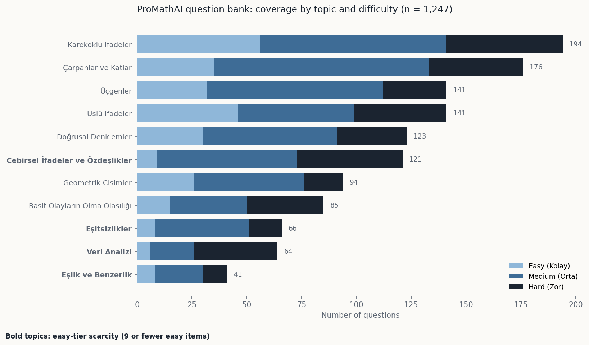
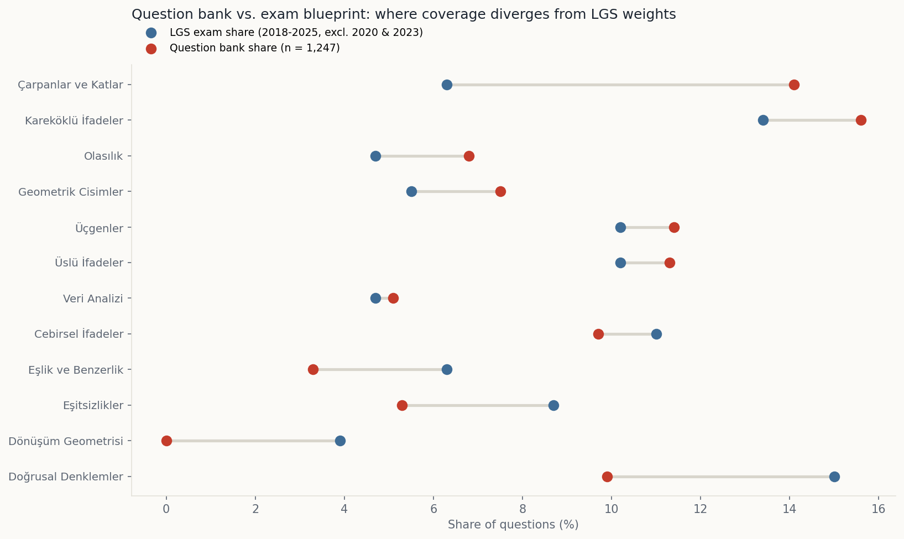

Does the question bank of my live exam-prep platform actually cover what the national exam tests? One SQL session against the production database, cross-referenced with eight years of exam blueprints.


Three curriculum objectives have zero questions, and the gap is user-visible: selecting one shows an empty-state message. All three are figure-heavy.
AI generation can't fill the gaps: it needs a seed question to react to. 0 of 107 generated items landed in the empty objectives.
One topic is +97 items over its exam weight; four others run far under. Root cause: authoring followed the calendar.
Easy-tier scarcity in four topics undermines the product's reinforcement loop for struggling students.
One question pointed to a non-existent difficulty level. Root cause: no foreign-key constraint. Fixed after review; constraints recommended to prevent recurrence.
Referential integrity otherwise spotless: zero orphans, zero duplicates across 1,247 items.
-- Curriculum objectives with no questions (coverage gaps)
SELECT s.subtopic_name, a.acquisition_code, a.acquisition_text
FROM acquisitions a
JOIN subtopics s ON s.subtopic_id = a.subtopic_id
LEFT JOIN questions q ON q.acquisition_id = a.acquisition_id
WHERE q.question_id IS NULL
ORDER BY s.subtopic_name, a.acquisition_code;Three rows came back. Each one is a lesson a student cannot practise today.
A blueprint-weighted, 95-item backlog targeting the under-covered objectives first.
Foreign-key constraints so invalid references can never enter the bank again.
A coverage check added to the content workflow, so gaps surface before students find them.
← All work ProMathAI product case study → Full report (PDF) ↗